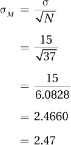

All the pieces are now in place for the culmination of this chapter—calculating a confidence interval for the mean. A confidence interval is a range, based on a sample value, within which a researcher estimates a population value falls. To use the language of statistics from the first chapter, confidence intervals use statistics to estimate parameters. Confidence intervals are useful because population values are rarely known, but researchers like to draw conclusions about populations.
Here’s how it works. A researcher takes a sample from a population and calculates a mean, M. Then, based on that sample mean, the researcher constructs a range around it, an interval, that is likely to contain the population mean, μ. This interval is called a confidence interval.
For example, suppose a researcher wanted to know how many fears the average American had. Clearly, it would be impossible to survey more than 300 million Americans to find the population mean, μ. But, the researcher could obtain a representative sample of, say, 1,000 Americans and ask them this question. Suppose he did so and found that the mean number of fears in the sample, M, was 2.78. If someone asked the researcher how many fears the average American had, the researcher shouldn’t say, “2.78.” Because of sampling error, it is unlikely that M is exactly the same as μ. M should be close to μ, but it is unlikely to be the same down to the last decimal point.
161
Sampling error, which is a random factor, could inflate the number of fears reported, in which case 2.78 is an overestimate, or it could lead to underreporting, in which case the average American has more than 2.78 fears. The wisest thing for the researcher to do is to add and subtract some amount to his sample mean, say, 2.78 ±1.25, so that he has a range within which it is likely that M falls. Said another way, there will be an interval (based on the sample value) that the researcher is fairly confident will capture the population value. This is a confidence interval.
Though confidence intervals may sound exotic, most people are already comfortable with them, albeit under a different name. Polls regularly report a margin of error, a confidence interval by another name. For example, a NYT/CBS poll reported that 66% of a sample of 1,002 adult Americans, interviewed by phone, believe that the distribution of money and wealth should be more even in the United States (Scheiber and Sussman, 2015). Because the pollsters went to some effort to gather a representative sample, they conclude that 66% of adult Americans feel the current income distribution is unfair. But, this poll has a margin of error of ±3%, so it is probably not exactly 66% who feel that income distribution is unfair. If asked what percentage of Americans feel it is unfair, the reporters should respond with a confidence interval: “The percentage of adult Americans who believe the distribution of wealth should be more even is somewhere from 63% to 69%.”
A confidence interval is an interval estimate for a population value, not a point estimate. A point estimate is just a single value as an estimate of a population value. An example of a point estimate is s, which is the estimated population value for a standard deviation. Interval estimates are ranges and are better than point estimates, because they are more likely to be true. Suppose a compulsive gambler was trying to guess the average GPA at your school. With which guess do you think she would have a better chance of being right?
The average GPA is 3.19, or
The average GPA is somewhere between 3.00 and 3.40.
She’d have to be awfully lucky if the average GPA at your school were exactly 3.19, a point estimate, so she is more likely to capture the actual population value with the interval estimate. A researcher is more likely to be correct with an interval estimate, but an interval estimate is less specific than a point estimate.
The math for calculating a confidence interval is not difficult, but the logic of why a confidence interval works is a little tricky. But, don’t worry. Confidence intervals will crop up regularly from here on out. I’m confident that at some point in the next 11 chapters, you will have an “aha” experience.
Let’s start by imagining that a researcher has taken all possible unique, random samples of size N from some population. For each sample, she has calculated a mean and she has made a sampling distribution of the means as shown in Figure 5.11.
There are several things to note about this figure:
Thanks to the central limit theorem, it is normally distributed.
Thanks to the central limit theorem, the mean of all the sample means, which is the midpoint of the distribution, is also the mean of the population. It’s marked as μ in Figure 5.11.
162
Thanks to the central limit theorem, it is possible to calculate the standard error of the mean. The X-axis has been marked off in units of the standard error of the mean, ranging from
–3 to 3. This indicates how many standard errors of the mean each sample mean falls away from μ.
To understand how confidence intervals work, look at Figure 5.12. There, the mean for the sample falls 1.5 standard errors of the mean above μ.
Let’s build an interval around the mean, adding 1.96 standard errors of the mean to it and subtracting 1.96 standard errors of the mean from it. Mathematically, that is
M ±1.96σM
Look at the brackets which extend 1.96σM above and below M. Does the interval within the brackets capture μ? The answer is yes.
In Figure 5.13 is an example that doesn’t capture μ. Figure 5.13 shows another sample with brackets extended 1.96σM above and below M. The mean of the sample in Figure 5.13 is 2.5 standard errors of the mean below μ, so μ doesn’t fall within the brackets around the sample mean.
163
That value of 1.96 was not arbitrarily chosen for these examples. 1.96 was developed in Chapter 4 as the cut-off score, in a normal distribution, for the middle 95% of cases.
Thanks to the central limit theorem, it is safe to assume that the sampling distribution of the mean is normally shaped. Also, the standard error of the mean is the standard deviation of the sampling distribution, so 95% of the sample means in a sampling distribution will fall from 1.96 standard errors of the mean below the midpoint to 1.96 standard errors of the mean above the midpoint. That is an important point, so here it is again and more succinctly: in a sampling distribution of the mean, 95% of the means fall within 1.96 σM of the midpoint. This is shown in Figure 5.14.
Now imagine any sample mean in the shaded region in Figure 5.14. Will the population mean (μ) fall within brackets extended 1.96 σM to the right and to the left of the sample mean? The answer is yes. This also means that any sample mean more than 1.96 σM away from the midpoint will fail to capture μ if the brackets are extended 1.96 σM around it.
Let’s put all the pieces together and define the 95% confidence interval for the population mean. Here’s what we know:
For any mean picked at random from the sampling distribution, there’s a 95% chance that 1.96 σM brackets extended symmetrically around it will capture μ.
If a sample mean is picked at random from a sampling distribution of the mean, there’s a 95% chance that the sample mean falls in the shaded region shown in Figure 5.14.
Brackets that extend ±1.96 σM capture μ for every sample mean in the shaded region.
For any mean picked at random from the sampling distribution, there’s a 95% chance that 1.96 σM brackets extended symmetrically around it will capture μ.
We’ve just developed the 95% confidence interval for the population mean: take a sample mean, create an interval around it that is ±1.96 σM, and there is a 95% chance that this interval captures μ. The formula is shown in Equation 5.3.
164
95%CIμ = M ± (1.96 × σM)
where 95%CIμ = the 95% confidence interval for thepopulation mean being calculated
M = sample mean
σM = standard error of the mean (Equation 5.1). [If σM is unknown, substitute sM (Equation 5.2).]
Let’s put this equation into practice and use the results to think about what a 95% confidence interval means. Dr. Saskia obtained a random sample of 37 students at an elite college, gave them an IQ test (σ = 15), and found M = 122. What can she conclude from this sample mean about the average IQ of the entire student body at that college. That is, what can she conclude about μ? This calls for a confidence interval.
All the pieces are present that are needed to calculate a confidence interval: M, σ, and N. σ and N are needed to calculate σM using Equation 5.1:

Now that the standard error of the mean is known, Equation 5.3 can be used to calculate the 95% confidence interval:
95%CIμ = M ± (1.96 × σM)
= 122 ± (1.96 × 2.4660)
= 122 ± 4.8837
= ranges from 117.1166 to 126.8834
= from 117.12 to 126.88
Note that the subtraction was done first as confidence intervals are reported from the lower number to the higher number. The confidence interval ranges from 117.12 to 126.88. Note that the whole confidence interval is 9.76 points wide and that each side of it is almost 5 points wide.
The American Psychological Association (2010) has a format for reporting confidence intervals. APA format asks that we do three things: (a) use CI as an abbreviation for confidence interval, (b) report what type of confidence interval (e.g., 95%), and (c) put in brackets first the lower limit and then the upper limit of the confidence interval. To report the mean and confidence interval for the IQ data, one would write M = 118.00, 95%CI [117.12, 126.88].
165
What does this confidence interval reveal to us? Officially, a 95% confidence interval only tells us that if we repeated the process of getting a sample and calculating a confidence interval, 95 out of 100 times, the confidence interval would capture the population mean, μ. Officially, a confidence interval doesn’t say whether any particular calculation of the confidence interval is one of those 95 times, and, officially, it doesn’t mean that there’s a 95% chance μ falls in this confidence interval (Cumming & Finch, 2005).
That’s officially. In reality, most people interpret a confidence interval as indicating that they are fairly certain the population mean falls in such a range. Figure 5.15 shows that with our IQ example we would conclude there’s a 95% chance that the mean (μ) IQ score of the students at this college falls somewhere in the range from 117.12 to 126.88. As new statisticians, the interpretation that a confidence interval gives a range in which the population parameter falls is fine. Just remember, there’s also a chance that the population parameter doesn’t fall in the confidence interval.
Earlier in this chapter, mention was made of a sample of 83 American adults in whom diastolic blood pressure was measured and where the standard error of the mean, sM, was 1.21. If the mean blood pressure in the sample was 81, what can one conclude about the mean diastolic blood pressure of American adults?
Using Equation 5.3 to calculate the 95% confidence interval for the population mean:
95%CIμ = M ± (1.96 × sM)
= 81 ± (1.96 × 1.21)
= 81 ± 2.3716
= 81 ± 2.37
= from 78.63 to 83.37
The confidence interval of 78.63 to 83.37, which is a total of 4.34 points wide, has a 95% probability of capturing the mean diastolic blood pressure of adult Americans. One can conclude that the mean diastolic blood pressure of American adults is probably somewhere from 78.63 to 83.37. In APA format, one would write M = 81.00, 95%CI [78.63, 83.37].
166
Review Your Knowledge
5.11 What is the difference between a point estimate and an interval estimate for a population value?
5.12 How often will a 95% confidence interval for μ capture the population mean?
5.13 How often will a 95% confidence interval for μ fail to capture the population mean?
Apply Your Knowledge
5.14 Given M = 17, σ = 8, and N = 55, calculate the 95% confidence interval for μ and report it in APA format.
5.15 Given M = 250, s = 60, and N = 180, calculate the 95% confidence interval for μ and report it in APA format.
A hypothetical survey about sexual attitudes and behaviors was used as an example in this chapter. To understand sampling better, let’s examine two real studies about human sexuality, one with such a poor sample that the results are meaningless and one that shows how much effort goes into obtaining a representative sample.
Shere Hite is famous for her “Hite Reports” on male and female sexuality. In 1987 she published Women and Love, known as The Hite Report on Love, Passion, and Emotional Violence. It was a survey of about 4,500 women from across the United States and it generated a number of thought-provoking findings. One result that gathered a lot of media attention was the rate of adultery among married women—Hite found that 70% of women who had been married five years reported extramarital affairs. Seventy percent!
This number is quite high and the fact that the sample size is so large, 4,500 women, gives the finding credibility. Further, the procedure Hite used to put together her sample was interesting. Hite was a feminist and didn’t want to be accused of only including feminists in her sample. So, she sent her survey to a broad cross section of women’s groups in 43 states—church groups, garden clubs, and so on. If 70% of these mainstream American women were having affairs, that’s surprising.
And, it turns out that that 70% figure can be safely ignored because of one important factor—the consent rate. Hite sent out more than 100,000 surveys and only 4,500 usable surveys were returned. That’s a consent rate of 4.5%, well below the necessary rate of 70%.
If a woman received a Shere Hite survey, what was the normal response? For 95.5% of women, the normal response was not returning the survey. The odd response came from the 4.5% of women who completed and returned the survey. Maybe the odd 4.5% of women who returned the survey are also odd in terms of marital fidelity? The self-selection bias is so great in Hite’s survey that the results can’t be taken seriously.
To gather a representative sample for a survey is difficult, but it can be done. Here’s an example of how to do it correctly. In 1994 the sociologist Edward Laumann and three colleagues published a book that reported on sexual behaviors and attitudes in the United States. It was based on a sample of about 3,400 Americans and also offered some interesting findings. Take the frequency with which people have sex, for example. They found that Americans fell into three groups with regard to how much sex they had in the past year:
167
About a third had sex infrequently, either having no sex in the past year or just a couple of times.
About a third had sex a few times a month.
And, about a third had sex frequently, two or more times a week.
Laumann and colleagues went to a lot of trouble to get a representative sample. Using a computer, they generated addresses in randomly selected neighborhoods in randomly selected cities, towns, and rural areas, from randomly selected geographic regions in the United States. This yielded almost 4,400 valid addresses. The people living at the address who spoke English and were between 18–59 years old were eligible for participation. From the eligible people at the address, the researchers randomly selected one person, approached him or her, explained the study, got permission to do the interview, and completed it. About 4 out of every 5 targeted participants agreed to be interviewed. That’s a consent rate of 80%, well above the minimum rate of 70%.
Such a large and randomly selected sample is likely to be representative of the U.S. population, but the researchers still checked their results. One action they took was to compare the characteristics of the sample to census data about the United States. Figure 5.16 compares data from the Census Bureau to results from their survey. The numbers don’t match exactly, but they are close and suggest that Laumann and colleagues achieved their goal of obtaining a sample that was representative of the United States. The sample mirrors America, so the study provides one of the best pictures we have ever had of sexual behavior in this nation.
168
Get your music player and pick one of your biggest playlists, say, one with hundreds of songs. That will be your population. Find out how many songs are on the playlist and how many total minutes of music it contains. Divide the total number of minutes of music by the number of songs to find the average length of a song. That is, μ. Next, use the shuffle function to select ≈10 songs from the playlist. This is your random sample from the population. Note the time that each song lasts and calculate the mean, M, and the standard deviation, s. Use these to create a 95% confidence interval for the population mean. Does it capture μ? If so, why? If not, why?